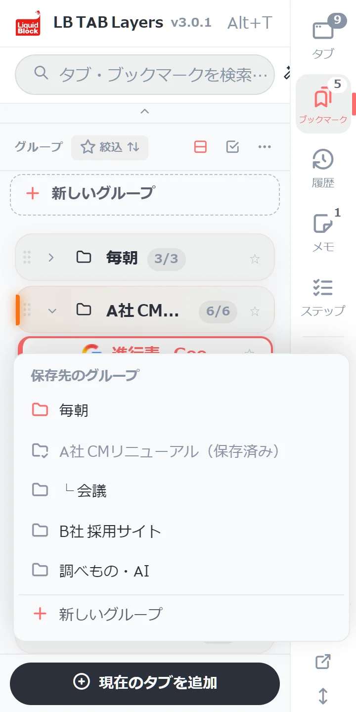
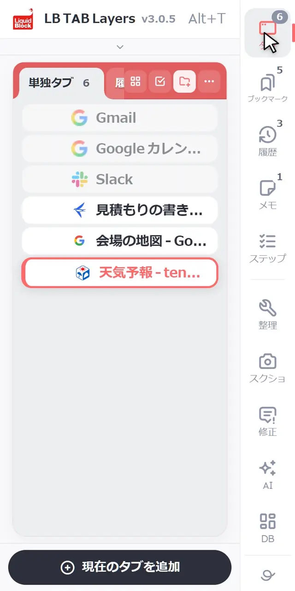
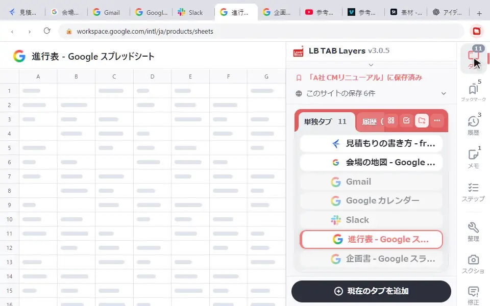

LB TAB Layers でタブを保存する方法は、おもに3つです。①パネルの下の「現在のタブを追加」を押して、保存先のグループを選ぶ。②「タブ」の画面でタブの左の丸を押して選び、「グループへ」。③タブを右クリックして「フォルダに保存」。保存したタブは、Chrome のブックマークにも同じように入ります。
「このページ、あとでまた見たい」。そう思ったときに、すぐ置いておける場所があると安心です。LB TAB Layers では、タブをグループに保存します。保存したタブは閉じても消えず、Chrome のブックマークにも入ります。
保存のしかたは3つあります。いま見ている1枚なのか、たくさんまとめてなのかで、使い分けてください。
方法① 「現在のタブを追加」（いま見ているページ）
いちばんよく使う方法です。パネルの下にある「現在のタブを追加」を押すと、「保存先のグループ」の一覧が出ます。入れたいグループを押せば、保存できます。

- そのページがもう入っているグループには「（保存済み）」と出て、押せないようになっています。二重に保存する心配がありません
- 一覧の一番下の「新しいグループ」から、その場でグループを作ることもできます
- グループがまだひとつもないときは、新しいグループを作る画面が開きます
方法② まとめて選んで「グループへ」（たくさんあるとき）
開いているタブが多いときは、まとめて入れると早いです。右の列の「タブ」の画面で、タブの左にある丸（○）を押すと、選ぶ状態になります。入れたいタブを続けて選び、「グループへ」を押して、入れ先のグループを選びます。

入れ先の一覧には、最近使ったグループが 🕘 付きで先に出ます。「＋ 新規グループ…」を選ぶと、選んだタブで新しいグループを作れます。保存してもタブは閉じないので、そのまま作業を続けられます。
方法③ 右クリック「フォルダに保存」
パネルの中で、開いているタブを右クリックし、「フォルダに保存」から保存先のグループを選びます。1枚だけ、別のグループに入れたいときに便利です。

パネルを開いていないときは
- ページの上で右クリック：「TAB Layers に保存」から、保存先のグループを選べます。リンクの上で右クリックすると、リンク先のページを保存できます。最近使ったグループが先頭に出ます
- ショートカット：Ctrl+Shift+S（Mac は ⌘+Shift+S）で、いまのページを「📥 あとで整理」グループに入れます。分けるのはあとでまとめて、というときに
右クリックでできることは 右クリックメニューでできること一覧 にまとめています。
同じページを2回保存しそうになったら
- 同じグループに同じページがあるときは「すでに追加されています」と出て、二重には入りません
- ほかのグループに同じページがあるときは「このタブは○○に既に登録されています。それでも追加しますか？」と聞かれます
保存したタブを直す
| やりたいこと | 操作 |
|---|---|
| 開く | 保存したタブを押す |
| 名前を変える | 右クリック →「名前を編集」 |
| 別のグループへ | 右クリック →「グループに移動」、またはドラッグ |
| メモを付ける | 右クリック →「メモを編集」（→ メモ機能） |
| ピンバーに置く | 右クリック →「ピンバーに追加」 |
| グループから外す | 右クリック →「削除」（ゴミ箱へ移ります） |
こんなふうに使うと便利
会議の前に、資料のタブを1つのグループへ
会議で見せるページを、方法②でまとめて「○○会議」グループへ。会議が始まったら ▶ で全部開けます。▶ で開くと、同じ名前・色の Chrome のタブグループになります（→ Chromeのタブグループを自動で作る・まとめて閉じる）。
調べものの途中で「これ、あとで」
読みかけのページは「現在のタブを追加」で「調べもの」グループへ。保存したらタブは閉じてかまいません。あとでグループから開き直せます。
忙しいときは、とりあえず「あとで整理」
どこに入れるか迷う時間がないときは、Ctrl+Shift+S。「📥 あとで整理」にためておき、手が空いたときに分けます。
知っておきたいこと
- 保存先は Chrome のブックマークです。グループと同じ名前のブックマークのフォルダに入るので、拡張を消しても残ります
- 消しても、すぐなら戻せます。保存したタブを削除すると、ブックマークのゴミ箱フォルダへ移り、8秒間「元に戻す」が出ます。ゴミ箱の中のものは30日たつと自動で消えます
- 保存できるのは、ふつうのWebページ（http・https）です。Chrome の設定画面などは保存できません
ℹ️ 無料版ではグループは5つまでです。PRO と、インストールから90日間の試用期間は無制限です。
🎬 保存のほかにも、いろいろできます。パネルを開く、保存したタブを開く、閉じたタブを履歴から戻す、ページにひもづけたメモ、ピンバーまで。ブラウザとパネルの動きをそのまま見られる 操作ガイド（動く画面で見る10の操作） にまとめています。入れたばかりの方は クイックチュートリアル（5分） からどうぞ。
よくある質問
Q. いま見ているページを、いちばん早く保存するには？
パネルの下の「現在のタブを追加」を押し、保存先のグループを選びます。パネルを開いていないときは、ページの上で右クリックして「TAB Layers に保存」からも保存できます。
Q. 開いているタブを、まとめて保存できますか？
はい。「タブ」の画面でタブの左の丸を押して選び、「グループへ」から入れ先のグループを選びます。「＋ 新規グループ…」で、選んだタブから新しいグループを作ることもできます。
Q. 同じページを2回保存するとどうなりますか？
同じグループにすでにある場合は「すでに追加されています」と出て、二重には入りません。「現在のタブを追加」では、そのページが入っているグループに「（保存済み）」と出ます。ほかのグループにある場合は、追加してよいか聞かれます。
Q. 保存したタブを消してしまいました。戻せますか？
消した直後なら、8秒間出る「元に戻す」で戻せます。消したタブはブックマークのゴミ箱フォルダに移っていて、30日たつと自動で消えます。
▶ 実際の操作を動画で見る
サイドバーで、ブックマークとタブをいっしょに管理する様子です。